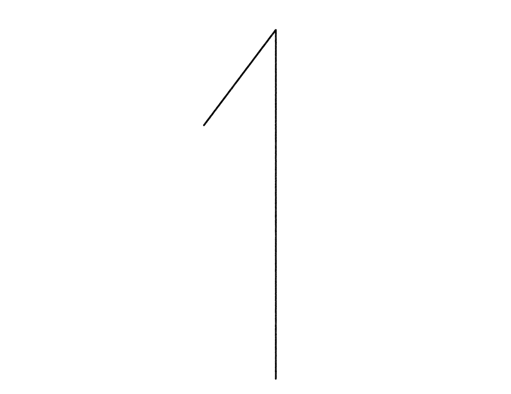
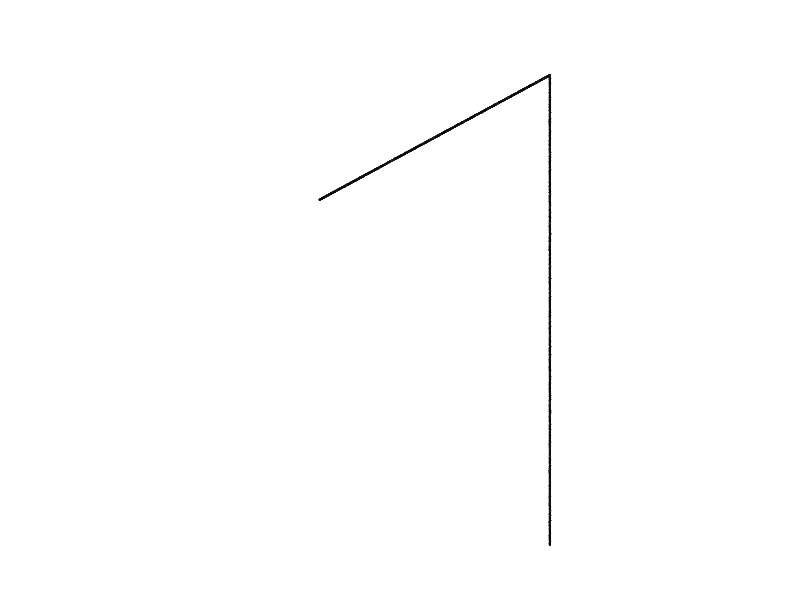
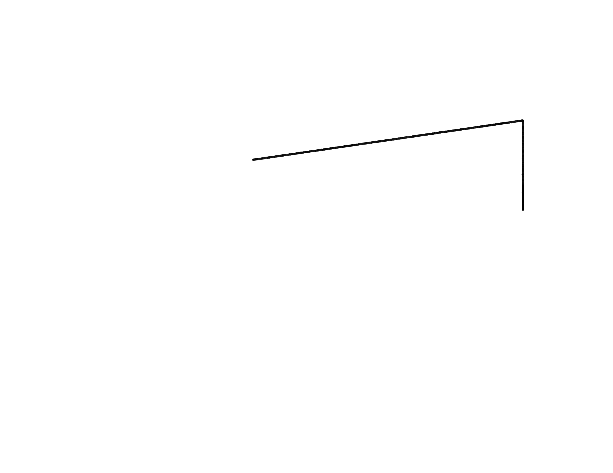
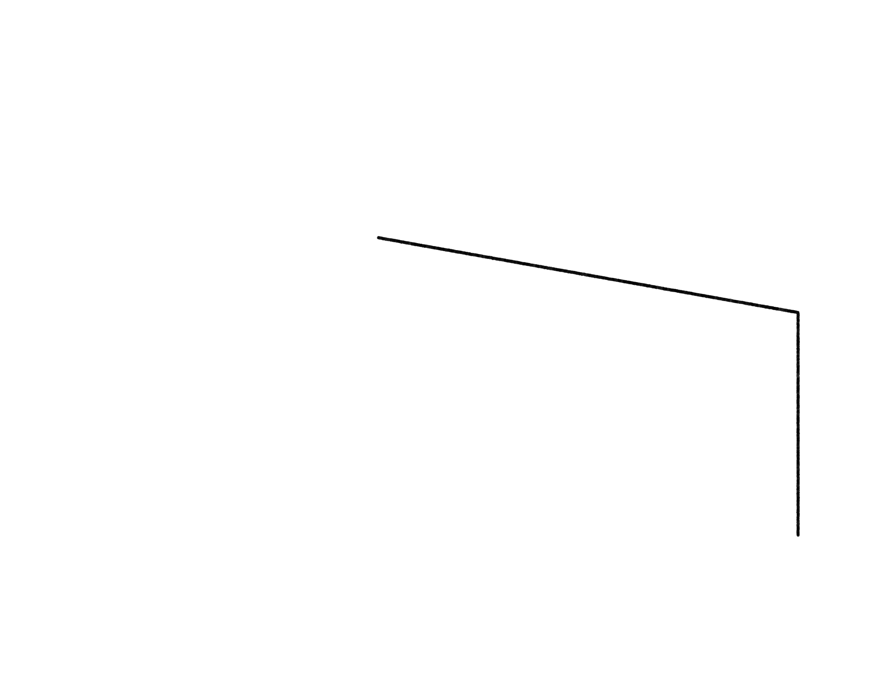

Susannah Jacob is a reporter and writer based in New York. She was born and raised in Texas, and worked at the White House as a speechwriter to President Barack Obama from 2014 to 2017.
Write to her
here
.
NYR Daily: What Happened to the West Village?
:: “We Have to Win Purple States’: An Interview with Michael Bennet
Atlantic.com: What Elizabeth Warren Learned from Frances Perkins
:: The Easter Egg Roll and the Bygone Era of White House Openness
CJR: Covering 2020 from Texas
The Paris Review Daily: The Man Who Spent Four Decades Interviewing Teen Stars
:: Blow Out Your Candles: An Elegy for Rose Williams
Medium: On writing a speech for Barack Obama about an old house on Capitol Hill
The Washington Post: Marvin Horne, rogue raisin farmer
:: Looking for Lincoln in the National Archives
Texas Monthly: Wendy Davis' Dad
NewYorker.com: How I Bless my Palm Beach Suit
The New York Times Magazine: LIVES: Pancake Chronicles
The New York Times 2011-2014
...
   